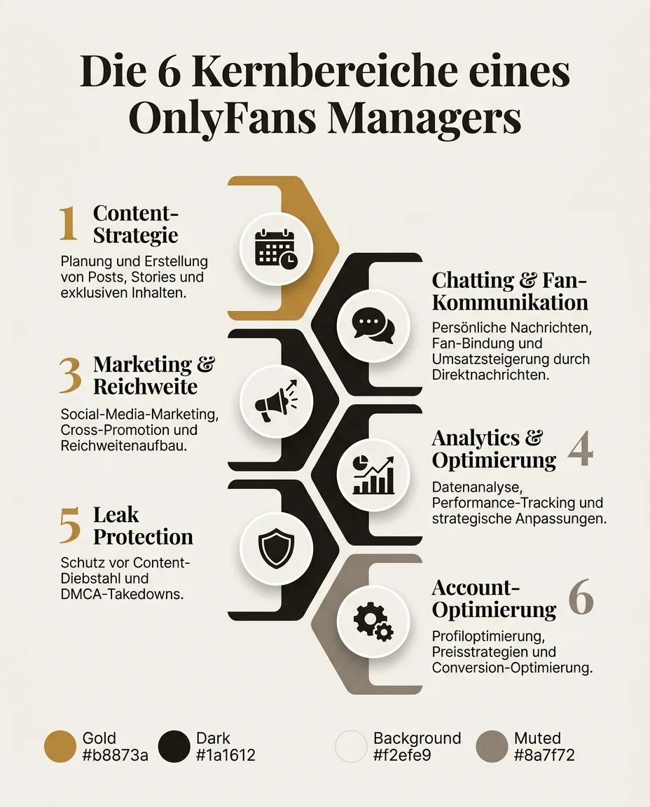
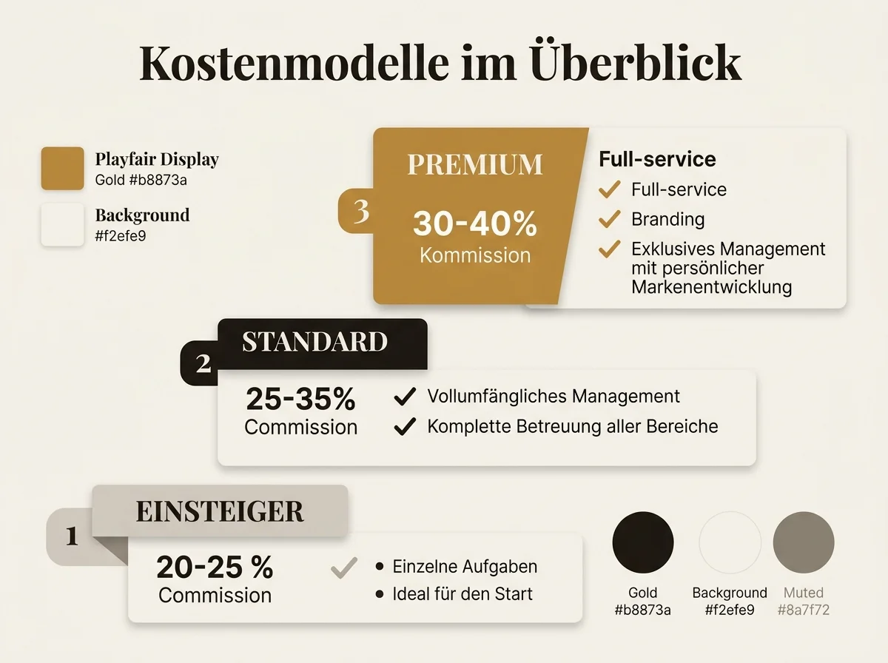

Was macht ein OnlyFans Manager? Erfahre alles über Aufgaben, typische Kosten (20-40%) und konkrete Vorteile professioneller OnlyFans Management Agenturen.

Was macht ein OnlyFans Manager? - Aufgaben, Kosten & Vorteile
Du verdienst bereits Geld auf OnlyFans oder stehst kurz davor, deinen Account zu starten. Irgendwann taucht die Frage auf: Lohnt sich ein OnlyFans Manager? Was genau macht so jemand eigentlich den ganzen Tag? Und vor allem: Was kostet das? In diesem Artikel bekommst du einen ehrlichen Blick hinter die Kulissen professioneller OnlyFans Management Agenturen.
Was genau macht ein OnlyFans Manager?
Ein OnlyFans Manager - manchmal auch OFM Manager genannt - übernimmt alle strategischen und operativen Aufgaben rund um deinen Creator-Account. Das Ziel: Deine Einnahmen steigern, während du dich auf das konzentrierst, was nur du kannst - Content erstellen.
Die Aufgaben lassen sich in sechs Kernbereiche einteilen:
Ein professioneller Manager entwickelt einen strukturierten Content-Plan und testet Formate, Timing und Preislogik datenbasiert.
Hier liegt oft der größte Umsatzhebel: schnell reagieren, Beziehungen aufbauen und Upselling sinnvoll einsetzen.
OnlyFans liefert kaum organische Reichweite - der Traffic kommt über Instagram, TikTok, X und Reddit.
Wichtige Kennzahlen wie Conversion, Churn und Umsatz pro Fan werden kontinuierlich gemessen und optimiert.
DMCA-Prozesse, Monitoring und saubere Strukturen schützen dein Business und deinen Content.
Profil, Bio, Pricing, Bundles und Welcome-Flows werden so abgestimmt, dass mehr Besucher zu zahlenden Fans werden.

Der typische Tagesablauf eines OFM Managers
Damit du ein realistisches Bild bekommst, hier ein klassischer Tagesablauf in einer professionellen OFM-Struktur:
- Check zeitkritischer Nachrichten und Support-Fälle
- Analyse der Performance vom Vortag
- Abstimmung zum Tages-Content
- Posts veröffentlichen und Teaser ausspielen
- Social-Media-Interaktion und Traffic-Aufbau
- Custom-Content-Anfragen strukturieren
- Aktives Chatting und PPV-Upsells
- Kampagnen-Follow-ups und Segmentierung
- Leak-Monitoring und Takedown-Prozesse
- Abschluss offener Konversationen
- Tagesreporting und Feintuning
- Vorbereitung für den nächsten Tag
Was kostet ein OnlyFans Manager?
Im deutschsprachigen Markt dominieren zwei Modelle: prozentuale Beteiligung und Flat-Fee. Am häufigsten ist die prozentuale Beteiligung.
| Modell | Anteil | Typischer Einsatz |
|---|---|---|
| Einsteiger-Paket | 20-25 % | Teilbereiche wie Chatting oder Funnel-Optimierung |
| Standard-Management | 25-35 % | Vollumfängliches Management inkl. Chat |
| Premium / Full-Service | 30-40 % | Zusätzlich Branding, Multi-Channel und Skalierung |

Worauf du bei Verträgen achten solltest
- Keine hohen Vorab-Gebühren ohne nachvollziehbare Leistung
- Klare Laufzeit und faire Kündigungsfristen
- Transparente Reports über Leistung und Umsatzentwicklung
Welche Vorteile bringt ein OnlyFans Manager konkret?
Entscheidend ist nicht nur der Kostenanteil, sondern der Nettoeffekt aus Zeitersparnis, Struktur und Umsatzwachstum.
Zeit, Fokus und psychische Entlastung
Der größte Soforteffekt für viele Creator ist weniger operativer Stress. Du kannst dich stärker auf Content und deine kreative Marke konzentrieren.
Mehr Planbarkeit statt Zufall
Mit laufender Analyse, klaren Prozessen und gezielter Angebotssteuerung werden Ergebnisse planbarer - und der Account langfristig stabiler.
Brauche ich einen OnlyFans Manager? Ein Selbst-Check
Wenn drei oder mehr Punkte auf dich zutreffen, lohnt sich ein professionelles Setup meist deutlich:
Woran erkennst du einen seriösen OnlyFans Manager?
- Unrealistische Garantien wie "10.000 Euro im ersten Monat sicher".
- Intransparente Vergütung oder unklare Abrechnungen.
- Keine Referenzen und kein nachvollziehbarer Prozess.
- Extrem lange Vertragsbindung ohne faire Exit-Regeln.
- Zugang zu Bankdaten gefordert statt sauberer Account-Prozesse.
Häufig gestellte Fragen
Ein OnlyFans Manager übernimmt die Aufgaben zwischen gutem Content und skalierbarem Business: Prozesse, Performance-Steuerung, Kommunikation und Wachstum.
Ob sich das für dich lohnt, hängt von deiner aktuellen Situation ab. Wenn Zeit knapp ist und Umsatzpotenzial brachliegt, ist professionelles Management meist der schnellste Hebel.
Bereit für professionelles Management?
Lass uns gemeinsam prüfen, wie wir dein Wachstum beschleunigen können - unverbindlich und kostenlos.
Kostenloses Erstgespräch buchen